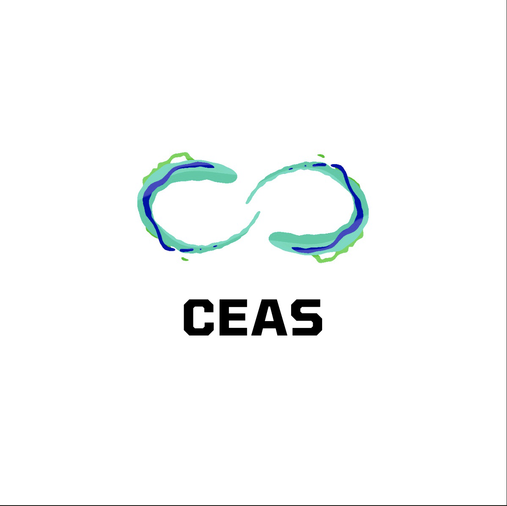

Liste des lociciels utilisés :
Unity
est un moteur de jeu open source, de plus Unity permet de partager facilement des ressources graphiques et sonores.
Il permet aussi un rendu accéléré et un chargement plus rapide.
Visual Studio
est un IDE capable de gérer le C# qui va nous être utile pour les scripts sur Unity.
Photon
est un utilitaire spécialisé dans la gestion du multijoueur, ce sera grâce à lui que nous créerons nos serveurs.
Audacity
est un logiciel de traitement sonore gratuit et Open Source qui permet d’enregistrer en direct, de copier-coller
ou d’importer des fichiers audios depuis n’importe quelle source et de les mixer.